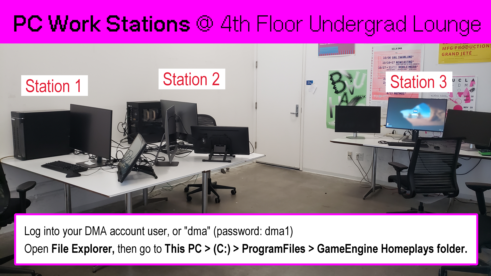

Readings and Homeplays
Reading Responses
Read the assigned material, and submit your response to the given questions in your own words.
Reading Response 1
Due: Week 1 Thursday, October 3 Submit Your Response Here
Read Kate Compton's "So you want to build a generator" https://galaxykate0.tumblr.com/post/139774965871/so-you-want-to-build-a-generator
Optional
If you're hungry for more, below are some recommended talks on more methods and applications of procedural generation:
- Kate Compton PROCJAM 2015 Talk (15:58 - 49:53) "Let It Grow: Practical Procedural Generation From The Ground Up" (34 min) https://www.youtube.com/live/s_eyo_m_hnc?feature=shared&t=958
- Herbert Wolverson 2020 Roguelike Celebration Talk "Procedural Map Generation Techniques" (27 min) https://www.youtube.com/live/TlLIOgWYVpI
Reading Response 2
Due: Week 4 Thursday, October 24 Submit Your Response Here
Read these two writings by Steve Swink:
- Game Feel: The Secret Ingredient
- Then read Chapter 17 of Game Feel: A Game Designer's Guide to Virtual Sensation (pg. 316 of the PDF).
Respond to the questions in the form in your own words.
For this reading response, it helps to have some idea(s) for what you'd like to do for Project 2 beforehand -- some questions will ask you to apply concepts that introduced in the writing to your plans for Project 2.
Optional:
Watch Juice it or lose it - a talk by Martin Jonasson & Petri Purho for a live demonstration of how to get juiciness with tweening, particles, and other visual design decisions.
Homeplays
- Sign up for game(s) to play in groups of 2~3;
- 30 ~ 60 minutes of total game play;
- Take notes, ask questions, consider the prompt;
- Take screenshots / recordings if needed.
PC / HTML games will also be available in the PC work stations next to the 4th floor Undergrad Lounge (Exit the elevator, turn right into the lounge, and the PC work stations will be on your right.)

Homeplay 1
Due: Week 2 Tuesday, October 8 Sign Up + Submit Presentations Here
Plan to spend about 30 ~ 60 minutes playing the game(s) with your group members, then prepare a short 5 ~ 7 minute presentation in response to the following:
- Tell us about the project
- What is being generated?
- What generation method, properties, and constraints (do you think) are being used?
- How do you interact with it?
- Consider the effectiveness of this generator and your experience of it -- what works, what doesn't, and why?
- Do the generated results feel meaningful, memorable, merely distinguishable, or pretty much the same?
- Was there something else about the project that was notable in your experience of it -- the camera, gameplay, interface, etc. ?
Please share a link to any presentation materials in the sign up sheet next to your group names. You will share your responses with the rest of the class during lesson time on the due date.